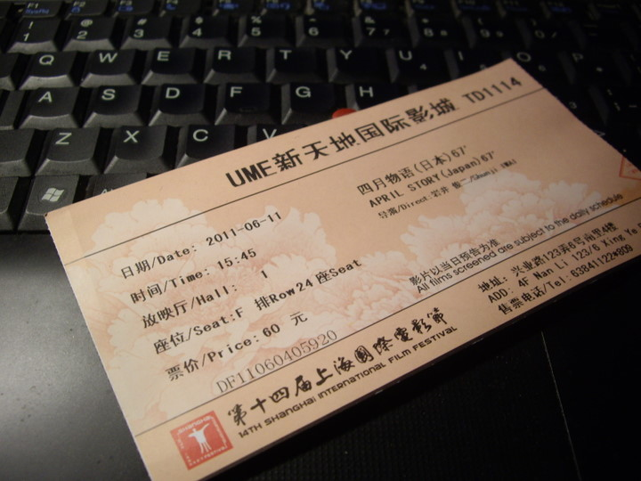

note：
-排名分先后
-纯出于个人喜好
-大部分配乐都怒赞
-可能会有轻微剧透
-视频源都是网上搜的，如果要更好的观影效果还是建议看原片
1.《黄金三镖客》
墓地狂奔没有悬念的第一。个人觉得是西部片史上最巅峰的五分钟。我比较偏执的归纳是：追逐黄金和暴富的信念->牛仔文化->西进运动->美国梦->美国人的精神体系。当然导演莱昂内在后期拍到《美国往事》的时候，对美国人和人性的理解可能更深，但《镖客》的这种直接和快感，却是前者比不上的了。
这一部到这里是整部片的高潮。比之于前面两部，这一部加入了南北战争的元素，弱化了以往单纯和锋利的人物冲突，但这种背景对人物的刻画和反思却得以加深，不知道是好是坏。不过个人觉得，有了战争的加入，小丑才得以超过贝克汉姆，而更接近全片的主角的位置。
配乐是《the ecstasy of gold》——我是因为这一部的ost变成莫里康内一生推的。开唱曲，这一段奔跑，和最后的大决战的配乐都是神曲。而莱昂内在这一段的场面调度我觉得是完全配得上这段配乐的。
2.《千年女优》
从65分钟开始有一段很长的奔跑，把整个剧情都串起来了，充满诗意和让人恍然的剪辑。
导演今敏在这部片里蒙太奇运用数量非常可观，但衔接却非常流畅，可谓行云流水无所不至，只可惜大师已逝。配乐的是平沢进，电子风格，也是推荐去听的一张ost。
还有42:20开始的1分多钟有非常精彩的日本风格的片段，把日本各个时期串了起来，算是我见过的日本风格的动画里美感上的极致了。
3.《四月物语》
从59分钟开始的一小段。
这部是我个人观影史第一的电影，也是另外一部难得在电影院圆了胶片梦的电影。这段奔跑不长，但是对爱情追逐的那种勇气，通过雨、雨伞等等前因后果巧妙的设置，非常淋漓且细腻地表现了出来。
配乐是松隆子自己弹的。顺便晒一下当时的票ww

4.《买凶拍人》
75:50开始，李栋全跑去找美智子，让她来演自己拍的电影的一段。导演彭胖子在这里用了慢镜，很有意思。
5.《巴顿芬克》
这段只看过一次，但是印象很深，只有短短10秒不到，在线片源找不到了，但懒得去专门下一部（我就是这么懒）。是最后大胖子拿枪在火海里跑的场景。
当然这部可能有个人对导演的喜好的因素在里面。。
6.《狼的孩子雨和雪》
这部是六部里面唯一不推荐看原片的，觉得剧情一般。但配乐是神作，作曲是高木正胜。尤其值得一提的是这段奔跑用了主观镜头，是其他奔跑镜头里很难见到的。#论动画的好处#
p.s. 其实还有很多精品的奔跑镜头的，比如戏梦巴黎、阿甘正传、小鞋子等等，但从我自己的感受上，还是比较喜欢以上几个。